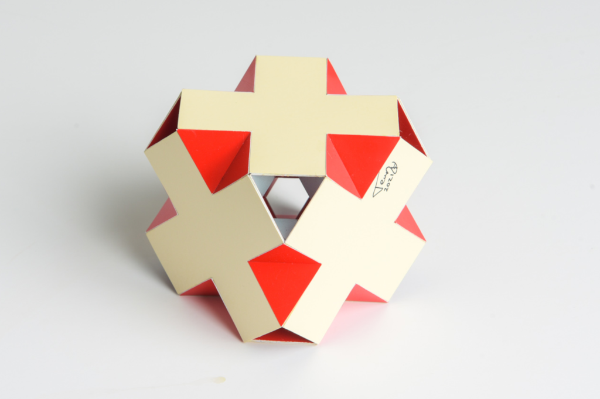

Toro Crosso: Swissohedron with Cuboctahedron Kernel

This polyhedron is a toroidal crossohedron. It consists of a cuboctahedron centre with a swissohedron on the outside. The tunnels are made of eight octahedra connecting the triangles of the cuboctahedron and the swissohedron. The octahedra give the appearance to be regular, but ther aren't; the edge ratio is 1:2/√(15-8√2) which is around 1:1.04 The model was found and built in 2021.
It is hard to show the final result with a single picture. I shared a video taken with my telephone on Youtube where are try to show the inside. With the 3D model on the right it is possible to remove the swissohedron so that you can see the inner structure of cuboctahedron with the eight octahedra. What you cannot see here (neither in the film) is the beautiful effect of a kaleidoscope, when you put your eye in the triangular opening of a tunnel and play with the reflections of the light coming from the other openings.
Copyright of pictures by PhotoArt Studio Hörby
Links
References
[BStew01] Steward, B. M: Adventures among the Toroids, Malloy Lithographing, Inc.; 2nd edition 1964Last Updated
2022-01-07